From the Question it is very clear that the relation between the blur kernel and the image is :
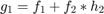
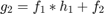
When we take Fourier Transform on both sides of the equation we get :
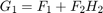 and 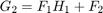
We solve the above equations.
We get the following as the solution for 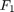 and 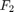 :
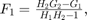 and 
and the time domain relation as the following :
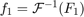 and 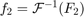
The filters are similar to wiener filters (inverse filters in general) and like all inverse filters they tend to increase indefinitely when the denominator is approaching zero. Here in this case it will reach a similar situation when 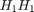 tends to 1. This one of the shortcomings of this technique for reflection removal.
But we always have some noise associated with the images (generally) additve in nature and hence the actual relation between the kernel and the image can be written as follows:
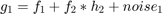
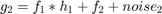
The noise variables are independent and random in nature and it is not possible estimate both 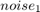 and 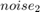 with the data at helm.